Consolidating Peace, Accelerating Transformation — Sustaining the monumental developmental strides of Governor Babagana Umara Zulum across all 27 Local Government Areas of Borno State.
A tested and disciplined blueprint designed to consolidate security gains, stimulate wealth creation, and uplift every community.
Equipping community defense groups (CJTF & Hunters), fortified smart townships, and dignified reintegration for IDPs.
Year-round solar irrigation, Lake Chad basin agro-revival, subsidized tractors, and fertilizer hubs in all 27 LGAs.
Sustaining free basic education, teacher welfare, and establishing 3 regional vocational & software innovation centers.
Engineering critical inter-LGA trade corridors, solar mini-grids for markets, and flood-proof urban drainage systems.
"Our mission is simple yet resolute: to preserve the hard-earned peace of Borno State, accelerate modern infrastructure to every remote village, and unlock unprecedented economic opportunities for our youth, farmers, and market women."
Meet the leadership pair equipped with the engineering discipline, administrative excellence, and humanitarian pedigree to lead Borno State.
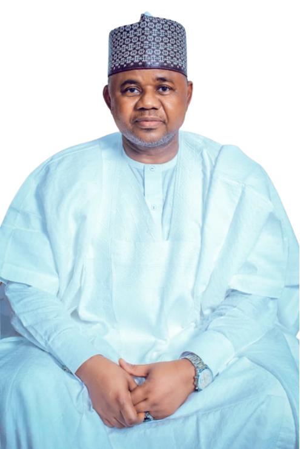
A registered civil engineer, consummate administrator, and dedicated public servant. Having served as the Commissioner for Reconstruction, Rehabilitation and Resettlement (RRR), Engineer Mustapha Gubio was the operational vanguard of Governor Babagana Umara Zulum's post-insurgency reconstruction drive—supervising the rebuilding of over 50,000 housing units, hospitals, and mega schools across devastated communities.
LGAs Reconstructed
Consensus Endorsement
Years Public Service
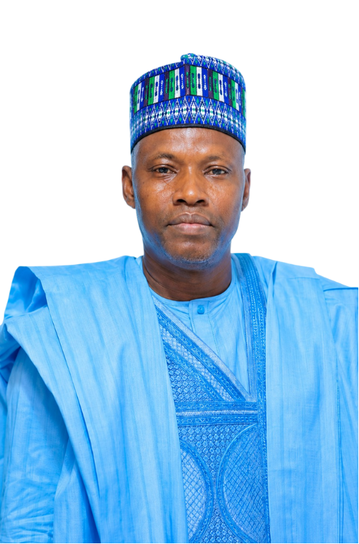
Former Director-General of the Borno State Emergency Management Agency (SEMA). A revered humanitarian leader recognized state-wide for his fearless crisis coordination, transparent aid delivery, and tireless dedication to the welfare of vulnerable families and frontline communities.
Real, measurable solutions crafted for the specific economic, agricultural, and security realities of our state.
Modern equipment, insurance coverage, and monthly stipend increases for CJTF, hunters, and local vigilantes protecting our farmlands.
Read Policy Brief →Revitalizing the South Chad Irrigation Project, providing free hybrid seeds, subsidized fertilizers, and solar pumps to 200,000 farmers.
Read Policy Brief →Expanding smart classrooms, training 10,000 certified teachers, and funding free WAEC/NECO examination fees for public school students.
Read Policy Brief →24/7 solar-powered health centers with free maternal-child care, subsidized medications, and dedicated emergency rural ambulances.
Read Policy Brief →Engineering durable asphalt roads connecting farming clusters to markets, plus commercial solar mini-grids for vibrant trade.
Read Policy Brief →Non-repayable startup capital for market women and zero-interest innovation loans for Borno youth in tech and creative industries.
Read Policy Brief →Backed by Nigeria's top leaders, Borno elders, trade associations, and grassroots youth coalitions.
"Engineer Mustapha Gubio possesses the visionary intellect, technical acumen, and loyalty to Borno's long-term masterplan. He is the right leader to carry our state to greater heights."
"Having worked directly with Engineer Gubio during our most demanding reconstruction and resettlement missions, I can attest to his unmatched work ethic, humility, and fear of God."
"The Gubio-Abdullahi ticket represents continuity of peace, infrastructure, and human capital development. All 27 LGA youth structures stand firmly behind this consensus choice."
Join Engineer Mustapha Gubio and Hon. Ali Isa Abdullahi live across Borno Senatorial Districts.
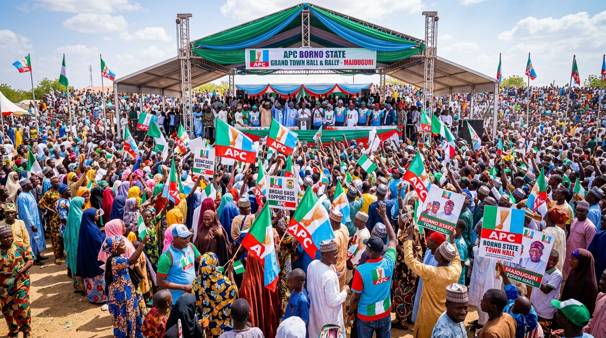
Grand convergence of delegates, ward executives, elders, and supporters across MMC, Jere, Bama, and Konduga.
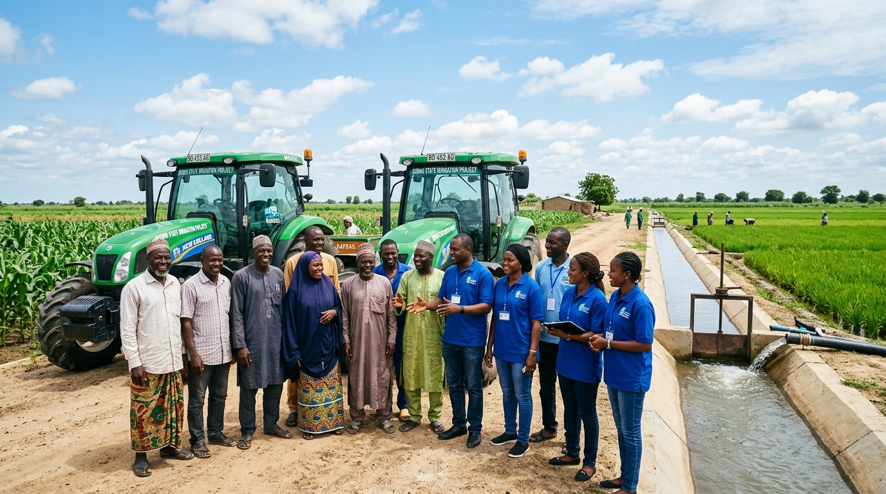
Policy dialogue on agro-processing, farm machinery distribution, and youth vocational training across the 9 Southern LGAs.
Stay informed on policy declarations, campaign stops, and official announcements.
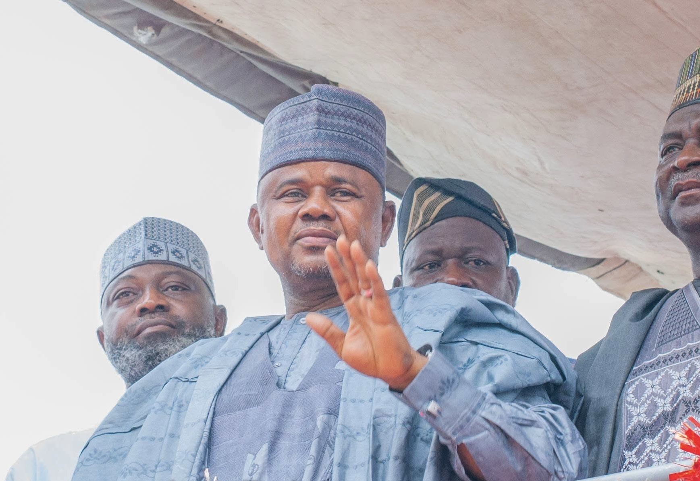
Vice President Kashim Shettima leads national and state stakeholders as delegates unanimously ratify Gubio's candidacy.
Read Full Report →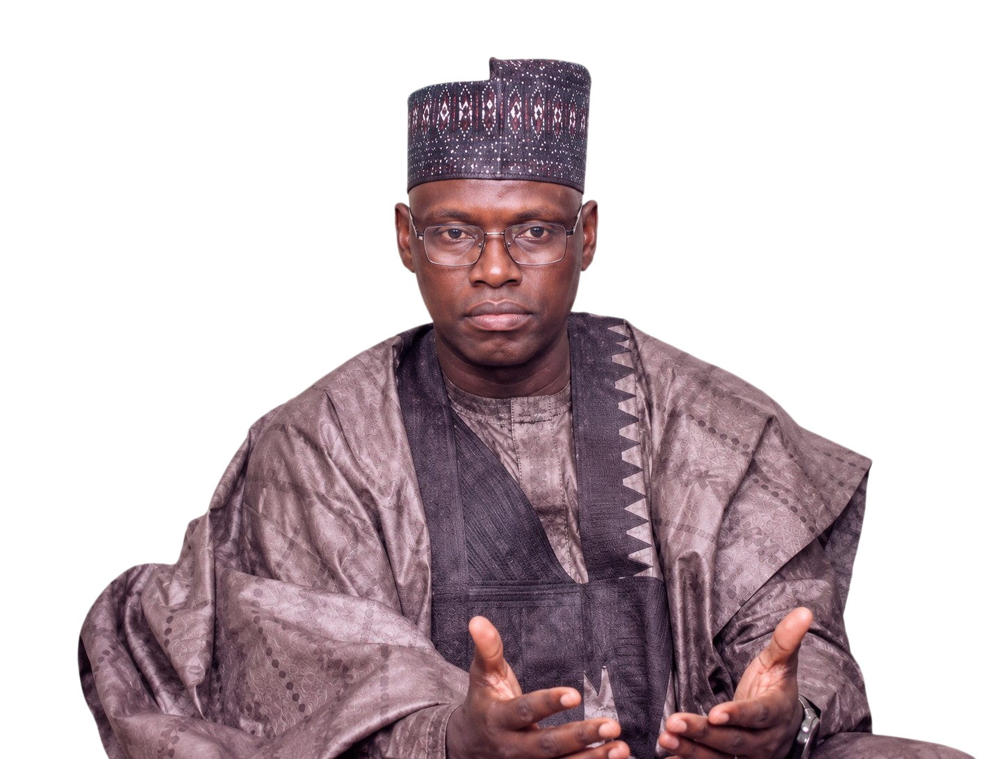
Former SEMA DG receives widespread applause from community groups for his exemplary disaster response record.
Read Full Report →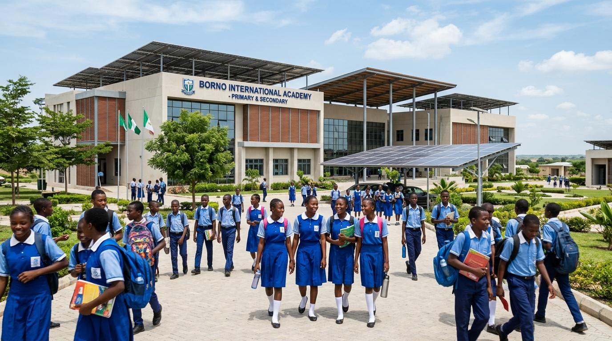
Blueprint promises free basic education sustainability, science labs, and solar power for all mega school campuses.
Read Full Report →Click any image to view high-resolution photography from the campaign trail across Borno State.
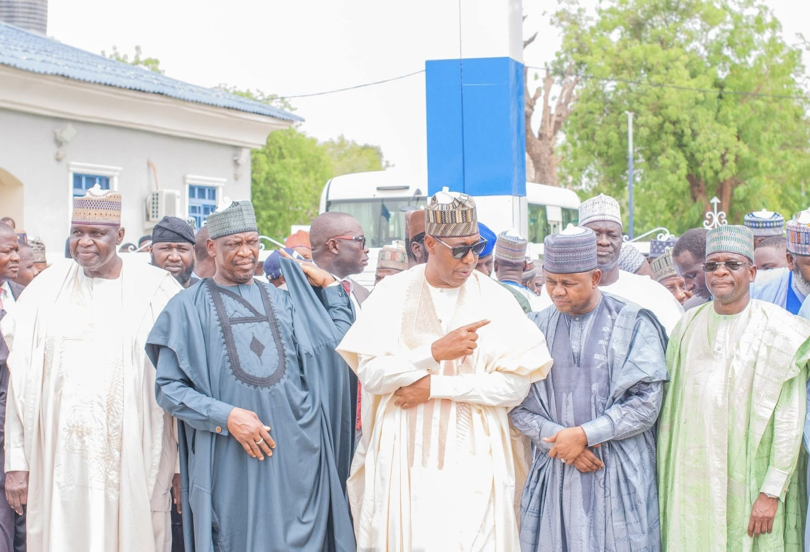
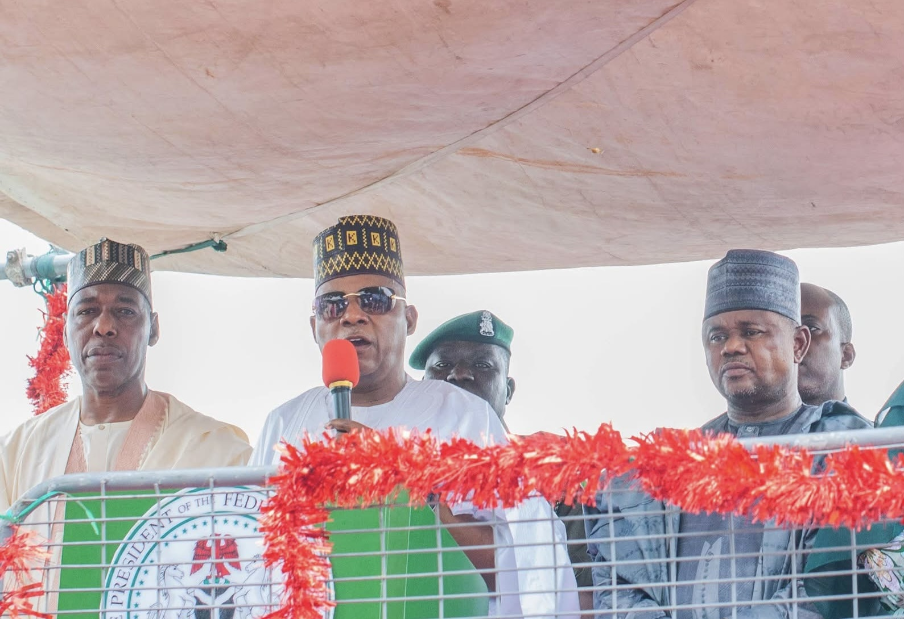
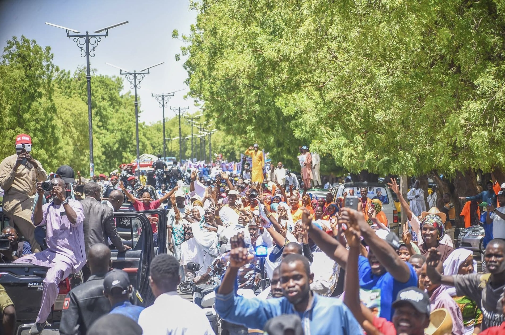
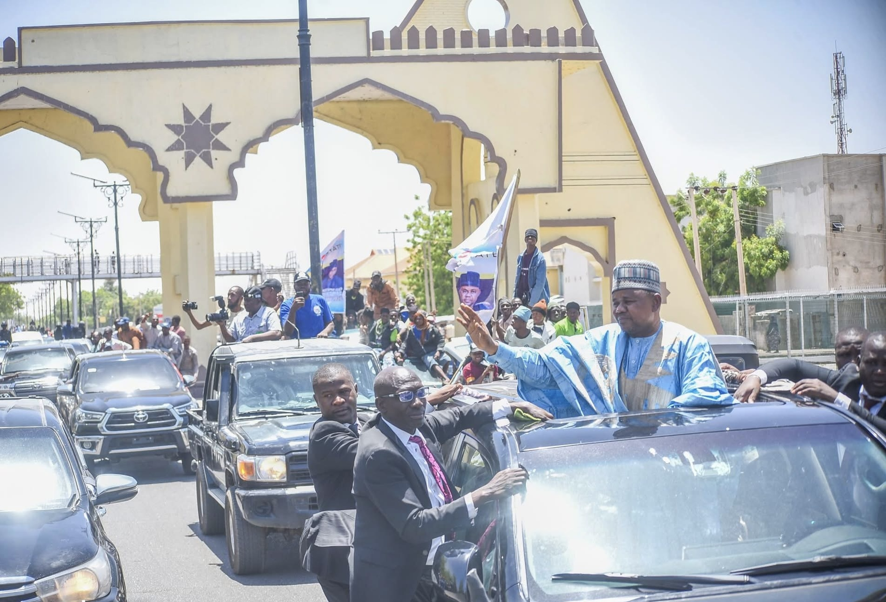
Find answers regarding voter verification, polling units, party membership, and campaign initiatives.
The future of Borno is built ward by ward, community by community. Sign up today to become an official grassroots mobilizer, polling unit agent, or volunteer coordinator.
Connect with fellow APC organizers in your local community.
Receive verified flyers, policy briefs, and digital campaign toolkits.
Invitations to private stakeholder sessions with the candidates.
Register your mobilization profile across the 27 Borno LGAs.
Your voluntary contributions fund campaign flyers, ward mobilization hubs, megaphone kits, and voter education across all 27 Borno LGAs.